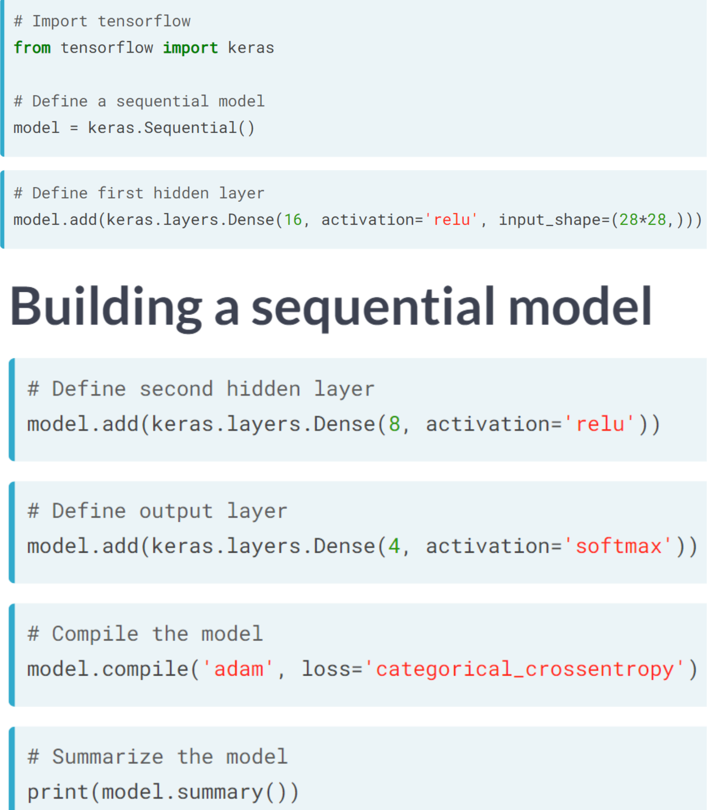
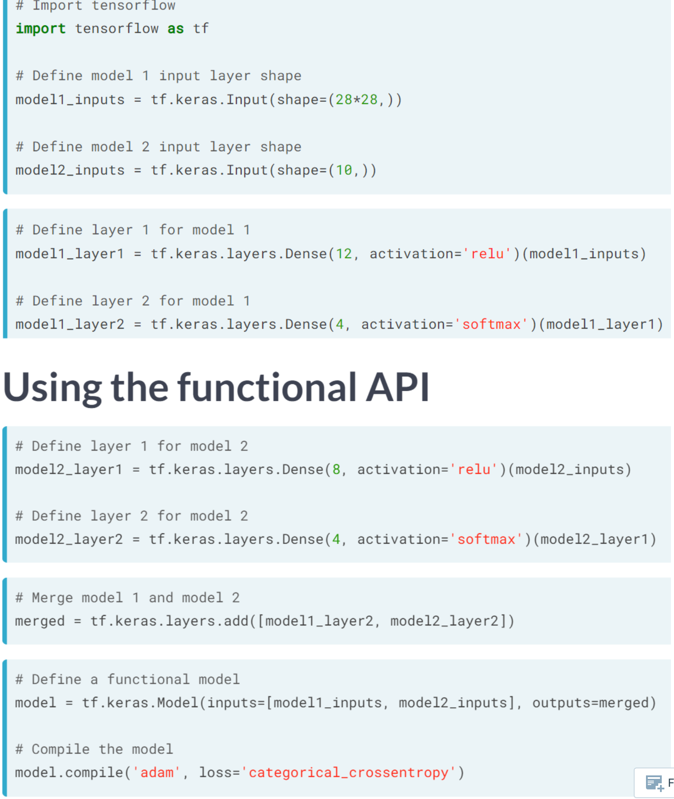
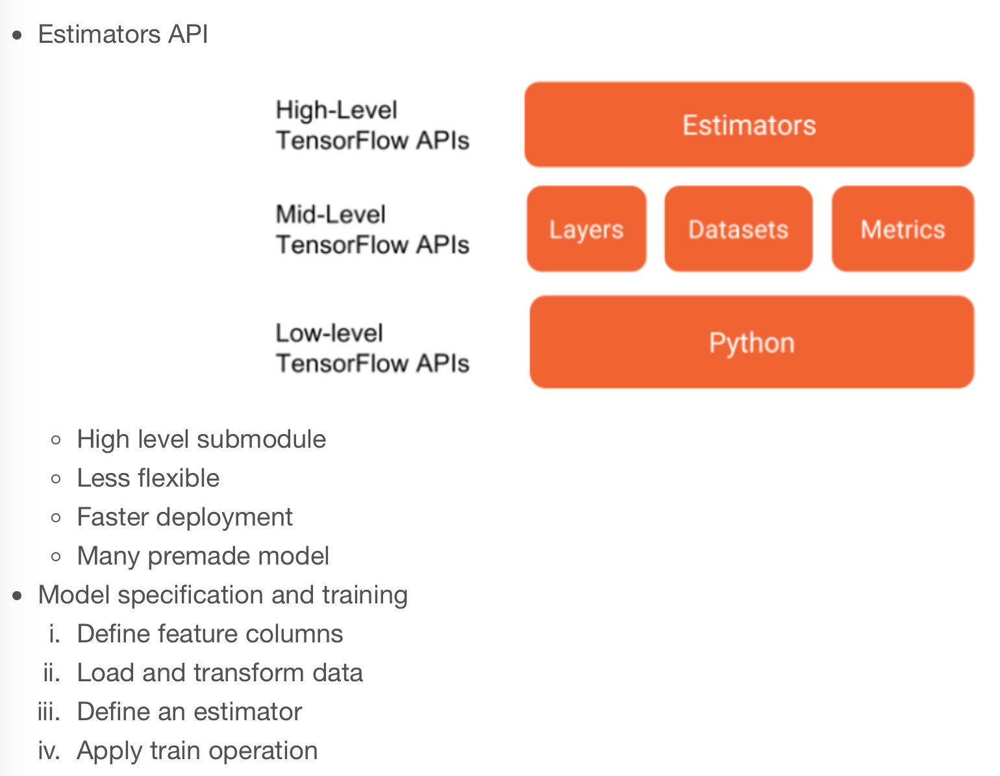

Code
import tensorflow as tf
import pandas as pd
import numpy as np
import matplotlib.pyplot as plt
plt.rcParams['figure.figsize'] = (8, 8)
tf.__version__'2.12.0'kakamana
April 1, 2023
You will use high-level APIs in TensorFlow 2 to train a sign language letter classifier in the final chapter. To train, validate, make predictions with, and evaluate models, you will use both the sequential and functional Keras APIs. In addition, you will learn how to use the Estimators API to streamline the model definition and training processes, as well as how to avoid errors.
This High Level APIs is part of Datacamp course: Introduction to TensorFlow in Python Until recently, cutting-edge computer vision algorithms could not distinguish between images of cats and dogs. Today, a skilled data scientist equipped with a laptop can classify tens of thousands of objects more accurately than a human eye. This course uses TensorFlow 2.6 to develop, train, and predict models that have fueled major advances in recommendation systems, image classification, and financial technology. In this course, you will learn both high-level APIs that will allow you to design and train deep learning models in 15 lines of code, as well as low-level APIs that will allow you to go beyond off-the-shelf procedures. Additionally, you will learn how to accurately predict housing prices, credit card defaults, and images of sign language gestures.
This is my learning experience of data science through DataCamp. These repository contributions are part of my learning journey through my graduate program masters of applied data sciences (MADS) at University Of Michigan, DeepLearning.AI, Coursera & DataCamp. You can find my similar articles & more stories at my medium & LinkedIn profile. I am available at kaggle & github blogs & github repos. Thank you for your motivation, support & valuable feedback.
These include projects, coursework & notebook which I learned through my data science journey. They are created for reproducible & future reference purpose only. All source code, slides or screenshot are intellactual property of respective content authors. If you find these contents beneficial, kindly consider learning subscription from DeepLearning.AI Subscription, Coursera, DataCamp
The sequential API * Input layer * Hidden layers * Output layer * Ordered in sequences
 
n chapter 3, we used components of the keras API in tensorflow to define a neural network, but we stopped short of using its full capabilities to streamline model definition and training. In this exercise, you will use the keras sequential model API to define a neural network that can be used to classify images of sign language letters. You will also use the .summary() method to print the model’s architecture, including the shape and number of parameters associated with each layer.
Note that the images were reshaped from (28, 28) to (784,), so that they could be used as inputs to a dense layer
model = tf.keras.Sequential()
# Define the first dense layer
model.add(tf.keras.layers.Dense(16, activation='relu', input_shape=(784,)))
# Define the second dense layer
model.add(tf.keras.layers.Dense(8, activation='relu', ))
# Define the output layer
model.add(tf.keras.layers.Dense(4, activation='softmax'))
# Print the model architecture
print(model.summary())
print("\nNotice that we've defined a model, but we haven't compiled it. The compilation step in keras allows us to set the optimizer, loss function, and other useful training parameters in a single line of code. Furthermore, the .summary() method allows us to view the model's architecture.")Model: "sequential_1"
_________________________________________________________________
Layer (type) Output Shape Param #
=================================================================
dense_3 (Dense) (None, 16) 12560
dense_4 (Dense) (None, 8) 136
dense_5 (Dense) (None, 4) 36
=================================================================
Total params: 12,732
Trainable params: 12,732
Non-trainable params: 0
_________________________________________________________________
None
Notice that we've defined a model, but we haven't compiled it. The compilation step in keras allows us to set the optimizer, loss function, and other useful training parameters in a single line of code. Furthermore, the .summary() method allows us to view the model's architecture.In this exercise, you will work towards classifying letters from the Sign Language MNIST dataset; however, you will adopt a different network architecture than what you used in the previous exercise. There will be fewer layers, but more nodes. You will also apply dropout to prevent overfitting. Finally, you will compile the model to use the adam optimizer and the categorical_crossentropy loss. You will also use a method in keras to summarize your model’s architecture.
model = tf.keras.Sequential()
# Define the first dense layer
model.add(tf.keras.layers.Dense(16, activation='sigmoid', input_shape=(784,)))
# Apply dropout to the first layer's output
model.add(tf.keras.layers.Dropout(0.25))
# Define the output layer
model.add(tf.keras.layers.Dense(4, activation='softmax'))
# Compile the model
model.compile(optimizer='adam', loss='categorical_crossentropy')
# Print a model summary
print(model.summary())Model: "sequential_2"
_________________________________________________________________
Layer (type) Output Shape Param #
=================================================================
dense_6 (Dense) (None, 16) 12560
dropout (Dropout) (None, 16) 0
dense_7 (Dense) (None, 4) 68
=================================================================
Total params: 12,628
Trainable params: 12,628
Non-trainable params: 0
_________________________________________________________________
NoneIn some cases, the sequential API will not be sufficiently flexible to accommodate your desired model architecture and you will need to use the functional API instead. If, for instance, you want to train two models with different architectures jointly, you will need to use the functional API to do this. In this exercise, we will see how to do this. We will also use the .summary() method to examine the joint model’s architecture.
m1_layer1 = tf.keras.layers.Dense(12, activation='sigmoid')(m1_inputs)
m1_layer2 = tf.keras.layers.Dense(4, activation='softmax')(m1_layer1)
# For model 2, pass the input layer to layer 1 and layer 1 to layer 2
m2_layer1 = tf.keras.layers.Dense(12, activation='relu')(m2_inputs)
m2_layer2 = tf.keras.layers.Dense(4, activation='softmax')(m2_layer1)
# Merge model outputs and define a functional model
merged = tf.keras.layers.add([m1_layer2, m2_layer2])
model = tf.keras.Model(inputs=[m1_inputs, m2_inputs], outputs=merged)
# Print a model summary
print(model.summary())
print("\nNotice that the .summary() method yields a new column: connected to. This column tells you how layers connect to each other within the network. We can see that dense_9, for instance, is connected to the input_2 layer. We can also see that the add layer, which merged the two models, connected to both dense_10 and dense_12")Model: "model_1"
__________________________________________________________________________________________________
Layer (type) Output Shape Param # Connected to
==================================================================================================
input_1 (InputLayer) [(None, 784)] 0 []
input_2 (InputLayer) [(None, 784)] 0 []
dense_12 (Dense) (None, 12) 9420 ['input_1[0][0]']
dense_14 (Dense) (None, 12) 9420 ['input_2[0][0]']
dense_13 (Dense) (None, 4) 52 ['dense_12[0][0]']
dense_15 (Dense) (None, 4) 52 ['dense_14[0][0]']
add_1 (Add) (None, 4) 0 ['dense_13[0][0]',
'dense_15[0][0]']
==================================================================================================
Total params: 18,944
Trainable params: 18,944
Non-trainable params: 0
__________________________________________________________________________________________________
None
Notice that the .summary() method yields a new column: connected to. This column tells you how layers connect to each other within the network. We can see that dense_9, for instance, is connected to the input_2 layer. We can also see that the add layer, which merged the two models, connected to both dense_10 and dense_12Training with Keras In this exercise, we return to our sign language letter classification problem. We have 2000 images of four letters–A, B, C, and D–and we want to classify them with a high level of accuracy. We will complete all parts of the problem, including the model definition, compilation, and training.
model = tf.keras.Sequential()
# Define a hidden layer
model.add(tf.keras.layers.Dense(16, activation='relu', input_shape=(784, )))
# Define the output layer
model.add(tf.keras.layers.Dense(4, activation='softmax'))
# Compile the model
model.compile(optimizer='SGD', loss='categorical_crossentropy')
# Complete the fitting operation
model.fit(sign_language_features, sign_language_labels, epochs=5)Epoch 1/5
63/63 [==============================] - 2s 6ms/step - loss: 1.3199
Epoch 2/5
63/63 [==============================] - 0s 5ms/step - loss: 1.0591
Epoch 3/5
63/63 [==============================] - 0s 5ms/step - loss: 0.8641
Epoch 4/5
63/63 [==============================] - 0s 5ms/step - loss: 0.7240
Epoch 5/5
63/63 [==============================] - 0s 5ms/step - loss: 0.62112023-04-02 00:04:57.813454: W tensorflow/tsl/platform/profile_utils/cpu_utils.cc:128] Failed to get CPU frequency: 0 Hz<keras.callbacks.History at 0x2c052a430>
You probably noticed that your only measure of performance improvement was the value of the loss function in the training sample, which is not particularly informative. You will improve on this in the next exercise.We trained a model to predict sign language letters in the previous exercise, but it is unclear how successful we were in doing so. In this exercise, we will try to improve upon the interpretability of our results. Since we did not use a validation split, we only observed performance improvements within the training set; however, it is unclear how much of that was due to overfitting. Furthermore, since we did not supply a metric, we only saw decreases in the loss function, which do not have any clear interpretation.
model = tf.keras.Sequential()
# Define the first layer
model.add(tf.keras.layers.Dense(32, activation='sigmoid', input_shape=(784,)))
# Add activation function to classifier
model.add(tf.keras.layers.Dense(4, activation='softmax'))
# Set the optimizer, loss function, and metrics
model.compile(optimizer='RMSprop', loss='categorical_crossentropy', metrics=['accuracy'])
# Add the number of epochs and the validation split
model.fit(sign_language_features, sign_language_labels, epochs=10, validation_split=0.1)Epoch 1/10
57/57 [==============================] - 1s 13ms/step - loss: 0.8342 - accuracy: 0.8006 - val_loss: 0.5160 - val_accuracy: 0.9550
Epoch 2/10
57/57 [==============================] - 0s 8ms/step - loss: 0.3794 - accuracy: 0.9867 - val_loss: 0.2649 - val_accuracy: 0.9800
Epoch 3/10
57/57 [==============================] - 0s 8ms/step - loss: 0.1962 - accuracy: 0.9922 - val_loss: 0.1424 - val_accuracy: 0.9950
Epoch 4/10
57/57 [==============================] - 0s 8ms/step - loss: 0.1039 - accuracy: 0.9972 - val_loss: 0.0779 - val_accuracy: 1.0000
Epoch 5/10
57/57 [==============================] - 0s 8ms/step - loss: 0.0568 - accuracy: 0.9994 - val_loss: 0.0435 - val_accuracy: 1.0000
Epoch 6/10
57/57 [==============================] - 0s 8ms/step - loss: 0.0309 - accuracy: 1.0000 - val_loss: 0.0236 - val_accuracy: 1.0000
Epoch 7/10
57/57 [==============================] - 1s 9ms/step - loss: 0.0169 - accuracy: 1.0000 - val_loss: 0.0136 - val_accuracy: 1.0000
Epoch 8/10
57/57 [==============================] - 0s 9ms/step - loss: 0.0092 - accuracy: 1.0000 - val_loss: 0.0074 - val_accuracy: 1.0000
Epoch 9/10
57/57 [==============================] - 0s 8ms/step - loss: 0.0051 - accuracy: 1.0000 - val_loss: 0.0041 - val_accuracy: 1.0000
Epoch 10/10
57/57 [==============================] - 0s 8ms/step - loss: 0.0028 - accuracy: 1.0000 - val_loss: 0.0021 - val_accuracy: 1.0000<keras.callbacks.History at 0x2c3fd2eb0>
With the keras API, you only needed 14 lines of code to define, compile, train, and validate a model. You may have noticed that your model performed quite well. In just 10 epochs, we achieved a classification accuracy of over 90% in the validation sample!In this exercise, we’ll work with a small subset of the examples from the original sign language letters dataset. A small sample, coupled with a heavily-parameterized model, will generally lead to overfitting. This means that your model will simply memorize the class of each example, rather than identifying features that generalize to many examples.
You will detect overfitting by checking whether the validation sample loss is substantially higher than the training sample loss and whether it increases with further training. With a small sample and a high learning rate, the model will struggle to converge on an optimum. You will set a low learning rate for the optimizer, which will make it easier to identify overfitting.
model = tf.keras.Sequential()
# Define the first layer
model.add(tf.keras.layers.Dense(1024, activation='relu', input_shape=(784, )))
# Add activation function to classifier
model.add(tf.keras.layers.Dense(4, activation='softmax'))
# Finish the model compilation
model.compile(optimizer=tf.keras.optimizers.Adam(lr=0.001),
loss='categorical_crossentropy', metrics=['accuracy'])
# Complete the model fit operation
model.fit(sign_language_features, sign_language_labels, epochs=50, validation_split=0.5)WARNING:absl:At this time, the v2.11+ optimizer `tf.keras.optimizers.Adam` runs slowly on M1/M2 Macs, please use the legacy Keras optimizer instead, located at `tf.keras.optimizers.legacy.Adam`.
WARNING:absl:`lr` is deprecated in Keras optimizer, please use `learning_rate` or use the legacy optimizer, e.g.,tf.keras.optimizers.legacy.Adam.
WARNING:absl:There is a known slowdown when using v2.11+ Keras optimizers on M1/M2 Macs. Falling back to the legacy Keras optimizer, i.e., `tf.keras.optimizers.legacy.Adam`.Epoch 1/50
32/32 [==============================] - 1s 17ms/step - loss: 0.2882 - accuracy: 0.9200 - val_loss: 0.0482 - val_accuracy: 0.9870
Epoch 2/50
32/32 [==============================] - 0s 13ms/step - loss: 0.0169 - accuracy: 0.9980 - val_loss: 0.0161 - val_accuracy: 0.9990
Epoch 3/50
32/32 [==============================] - 0s 12ms/step - loss: 0.0066 - accuracy: 0.9990 - val_loss: 0.0083 - val_accuracy: 1.0000
Epoch 4/50
32/32 [==============================] - 0s 12ms/step - loss: 0.0038 - accuracy: 1.0000 - val_loss: 0.0054 - val_accuracy: 1.0000
Epoch 5/50
32/32 [==============================] - 0s 13ms/step - loss: 0.0020 - accuracy: 1.0000 - val_loss: 0.0047 - val_accuracy: 1.0000
Epoch 6/50
32/32 [==============================] - 0s 13ms/step - loss: 0.0015 - accuracy: 1.0000 - val_loss: 0.0043 - val_accuracy: 1.0000
Epoch 7/50
32/32 [==============================] - 0s 12ms/step - loss: 0.0012 - accuracy: 1.0000 - val_loss: 0.0037 - val_accuracy: 1.0000
Epoch 8/50
32/32 [==============================] - 0s 12ms/step - loss: 9.5653e-04 - accuracy: 1.0000 - val_loss: 0.0030 - val_accuracy: 1.0000
Epoch 9/50
32/32 [==============================] - 0s 12ms/step - loss: 8.1023e-04 - accuracy: 1.0000 - val_loss: 0.0027 - val_accuracy: 1.0000
Epoch 10/50
32/32 [==============================] - 0s 12ms/step - loss: 6.8520e-04 - accuracy: 1.0000 - val_loss: 0.0027 - val_accuracy: 1.0000
Epoch 11/50
32/32 [==============================] - 0s 12ms/step - loss: 5.8221e-04 - accuracy: 1.0000 - val_loss: 0.0022 - val_accuracy: 1.0000
Epoch 12/50
32/32 [==============================] - 0s 12ms/step - loss: 4.9217e-04 - accuracy: 1.0000 - val_loss: 0.0020 - val_accuracy: 1.0000
Epoch 13/50
32/32 [==============================] - 0s 12ms/step - loss: 4.3735e-04 - accuracy: 1.0000 - val_loss: 0.0019 - val_accuracy: 1.0000
Epoch 14/50
32/32 [==============================] - 0s 12ms/step - loss: 3.8531e-04 - accuracy: 1.0000 - val_loss: 0.0015 - val_accuracy: 1.0000
Epoch 15/50
32/32 [==============================] - 0s 12ms/step - loss: 3.4301e-04 - accuracy: 1.0000 - val_loss: 0.0015 - val_accuracy: 1.0000
Epoch 16/50
32/32 [==============================] - 0s 12ms/step - loss: 3.0365e-04 - accuracy: 1.0000 - val_loss: 0.0014 - val_accuracy: 1.0000
Epoch 17/50
32/32 [==============================] - 0s 13ms/step - loss: 2.7377e-04 - accuracy: 1.0000 - val_loss: 0.0014 - val_accuracy: 1.0000
Epoch 18/50
32/32 [==============================] - 0s 12ms/step - loss: 2.4890e-04 - accuracy: 1.0000 - val_loss: 0.0013 - val_accuracy: 1.0000
Epoch 19/50
32/32 [==============================] - 0s 12ms/step - loss: 2.2878e-04 - accuracy: 1.0000 - val_loss: 0.0011 - val_accuracy: 1.0000
Epoch 20/50
32/32 [==============================] - 0s 12ms/step - loss: 2.0775e-04 - accuracy: 1.0000 - val_loss: 0.0011 - val_accuracy: 1.0000
Epoch 21/50
32/32 [==============================] - 0s 13ms/step - loss: 1.9017e-04 - accuracy: 1.0000 - val_loss: 0.0011 - val_accuracy: 1.0000
Epoch 22/50
32/32 [==============================] - 0s 12ms/step - loss: 1.7508e-04 - accuracy: 1.0000 - val_loss: 0.0010 - val_accuracy: 1.0000
Epoch 23/50
32/32 [==============================] - 0s 13ms/step - loss: 1.6096e-04 - accuracy: 1.0000 - val_loss: 9.3468e-04 - val_accuracy: 1.0000
Epoch 24/50
32/32 [==============================] - 0s 12ms/step - loss: 1.4950e-04 - accuracy: 1.0000 - val_loss: 9.3433e-04 - val_accuracy: 1.0000
Epoch 25/50
32/32 [==============================] - 0s 12ms/step - loss: 1.3906e-04 - accuracy: 1.0000 - val_loss: 8.9316e-04 - val_accuracy: 1.0000
Epoch 26/50
32/32 [==============================] - 0s 12ms/step - loss: 1.2921e-04 - accuracy: 1.0000 - val_loss: 8.2573e-04 - val_accuracy: 1.0000
Epoch 27/50
32/32 [==============================] - 0s 12ms/step - loss: 1.2162e-04 - accuracy: 1.0000 - val_loss: 7.9166e-04 - val_accuracy: 1.0000
Epoch 28/50
32/32 [==============================] - 0s 12ms/step - loss: 1.1374e-04 - accuracy: 1.0000 - val_loss: 7.3158e-04 - val_accuracy: 1.0000
Epoch 29/50
32/32 [==============================] - 0s 12ms/step - loss: 1.0682e-04 - accuracy: 1.0000 - val_loss: 6.9960e-04 - val_accuracy: 1.0000
Epoch 30/50
32/32 [==============================] - 0s 12ms/step - loss: 1.0055e-04 - accuracy: 1.0000 - val_loss: 6.8646e-04 - val_accuracy: 1.0000
Epoch 31/50
32/32 [==============================] - 0s 12ms/step - loss: 9.4847e-05 - accuracy: 1.0000 - val_loss: 6.4173e-04 - val_accuracy: 1.0000
Epoch 32/50
32/32 [==============================] - 0s 12ms/step - loss: 8.9704e-05 - accuracy: 1.0000 - val_loss: 6.5312e-04 - val_accuracy: 1.0000
Epoch 33/50
32/32 [==============================] - 0s 12ms/step - loss: 8.3589e-05 - accuracy: 1.0000 - val_loss: 6.3940e-04 - val_accuracy: 1.0000
Epoch 34/50
32/32 [==============================] - 0s 12ms/step - loss: 7.9299e-05 - accuracy: 1.0000 - val_loss: 6.3109e-04 - val_accuracy: 1.0000
Epoch 35/50
32/32 [==============================] - 0s 12ms/step - loss: 7.4679e-05 - accuracy: 1.0000 - val_loss: 6.0156e-04 - val_accuracy: 1.0000
Epoch 36/50
32/32 [==============================] - 0s 12ms/step - loss: 7.1120e-05 - accuracy: 1.0000 - val_loss: 5.6856e-04 - val_accuracy: 1.0000
Epoch 37/50
32/32 [==============================] - 0s 12ms/step - loss: 6.7329e-05 - accuracy: 1.0000 - val_loss: 5.5690e-04 - val_accuracy: 1.0000
Epoch 38/50
32/32 [==============================] - 0s 13ms/step - loss: 6.4086e-05 - accuracy: 1.0000 - val_loss: 5.3419e-04 - val_accuracy: 1.0000
Epoch 39/50
32/32 [==============================] - 0s 13ms/step - loss: 6.1411e-05 - accuracy: 1.0000 - val_loss: 5.0579e-04 - val_accuracy: 1.0000
Epoch 40/50
32/32 [==============================] - 0s 12ms/step - loss: 5.8281e-05 - accuracy: 1.0000 - val_loss: 4.8602e-04 - val_accuracy: 1.0000
Epoch 41/50
32/32 [==============================] - 0s 13ms/step - loss: 5.5301e-05 - accuracy: 1.0000 - val_loss: 4.7232e-04 - val_accuracy: 1.0000
Epoch 42/50
32/32 [==============================] - 0s 12ms/step - loss: 5.2920e-05 - accuracy: 1.0000 - val_loss: 4.6423e-04 - val_accuracy: 1.0000
Epoch 43/50
32/32 [==============================] - 0s 12ms/step - loss: 5.0452e-05 - accuracy: 1.0000 - val_loss: 4.6194e-04 - val_accuracy: 1.0000
Epoch 44/50
32/32 [==============================] - 0s 13ms/step - loss: 4.8427e-05 - accuracy: 1.0000 - val_loss: 4.4945e-04 - val_accuracy: 1.0000
Epoch 45/50
32/32 [==============================] - 0s 13ms/step - loss: 4.6355e-05 - accuracy: 1.0000 - val_loss: 4.3635e-04 - val_accuracy: 1.0000
Epoch 46/50
32/32 [==============================] - 0s 13ms/step - loss: 4.4471e-05 - accuracy: 1.0000 - val_loss: 4.1862e-04 - val_accuracy: 1.0000
Epoch 47/50
32/32 [==============================] - 0s 12ms/step - loss: 4.2549e-05 - accuracy: 1.0000 - val_loss: 4.1940e-04 - val_accuracy: 1.0000
Epoch 48/50
32/32 [==============================] - 0s 12ms/step - loss: 4.0800e-05 - accuracy: 1.0000 - val_loss: 3.9886e-04 - val_accuracy: 1.0000
Epoch 49/50
32/32 [==============================] - 0s 12ms/step - loss: 3.9281e-05 - accuracy: 1.0000 - val_loss: 3.8642e-04 - val_accuracy: 1.0000
Epoch 50/50
32/32 [==============================] - 0s 12ms/step - loss: 3.7842e-05 - accuracy: 1.0000 - val_loss: 3.7743e-04 - val_accuracy: 1.0000<keras.callbacks.History at 0x2c3de16a0>print("\nYou may have noticed that the validation loss, val_loss, was substantially higher than the training loss, loss. Furthermore, if val_loss started to increase before the training process was terminated, then we may have overfitted. When this happens, you will want to try decreasing the number of epochs.")
You may have noticed that the validation loss, val_loss, was substantially higher than the training loss, loss. Furthermore, if val_loss started to increase before the training process was terminated, then we may have overfitted. When this happens, you will want to try decreasing the number of epochs.Two models have been trained and are available: large_model, which has many parameters; and small_model, which has fewer parameters. Both models have been trained using train_features and train_labels, which are available to you. A separate test set, which consists of test_features and test_labels, is also available.
Your goal is to evaluate relative model performance and also determine whether either model exhibits signs of overfitting. You will do this by evaluating large_model and small_model on both the train and test sets. For each model, you can do this by applying the .evaluate(x, y) method to compute the loss for features x and labels y. You will then compare the four losses generated.
WARNING:absl:At this time, the v2.11+ optimizer `tf.keras.optimizers.SGD` runs slowly on M1/M2 Macs, please use the legacy Keras optimizer instead, located at `tf.keras.optimizers.legacy.SGD`.
WARNING:absl:`lr` is deprecated in Keras optimizer, please use `learning_rate` or use the legacy optimizer, e.g.,tf.keras.optimizers.legacy.SGD.
WARNING:absl:There is a known slowdown when using v2.11+ Keras optimizers on M1/M2 Macs. Falling back to the legacy Keras optimizer, i.e., `tf.keras.optimizers.legacy.SGD`.large_model = tf.keras.Sequential()
large_model.add(tf.keras.layers.Dense(64, activation='sigmoid', input_shape=(784,)))
large_model.add(tf.keras.layers.Dense(4, activation='softmax'))
large_model.compile(optimizer=tf.keras.optimizers.Adam(learning_rate=0.001,
beta_1=0.9, beta_2=0.999),
loss='categorical_crossentropy', metrics=['accuracy'])WARNING:absl:At this time, the v2.11+ optimizer `tf.keras.optimizers.Adam` runs slowly on M1/M2 Macs, please use the legacy Keras optimizer instead, located at `tf.keras.optimizers.legacy.Adam`.
WARNING:absl:There is a known slowdown when using v2.11+ Keras optimizers on M1/M2 Macs. Falling back to the legacy Keras optimizer, i.e., `tf.keras.optimizers.legacy.Adam`.<keras.callbacks.History at 0x2d5171310>small_train = small_model.evaluate(train_features, train_labels)
# Evaluate the small model using the test data
small_test = small_model.evaluate(test_features, test_labels)
# Evaluate the large model using the train data
large_train = large_model.evaluate(train_features, train_labels)
# Evalute the large model using the test data
large_test = large_model.evaluate(test_features, test_labels)
# Print losses
print('\n Small - Train: {}, Test: {}'.format(small_train, small_test))
print('Large - Train: {}, Test: {}'.format(large_train, large_test))32/32 [==============================] - 0s 7ms/step - loss: 0.2940 - accuracy: 0.9720
32/32 [==============================] - 0s 6ms/step - loss: 0.3133 - accuracy: 0.9680
32/32 [==============================] - 0s 7ms/step - loss: 0.0087 - accuracy: 1.0000
32/32 [==============================] - 0s 6ms/step - loss: 0.0096 - accuracy: 1.0000
Small - Train: [0.2939916253089905, 0.9720000624656677], Test: [0.31331706047058105, 0.968000054359436]
Large - Train: [0.008654868230223656, 1.0], Test: [0.009581816382706165, 1.0]print("\nNotice that the gap between the test and train set losses is high for large_model, suggesting that overfitting may be an issue. Furthermore, both test and train set performance is better for large_model. This suggests that we may want to use large_model, but reduce the number of training epochs.")
Notice that the gap between the test and train set losses is high for large_model, suggesting that overfitting may be an issue. Furthermore, both test and train set performance is better for large_model. This suggests that we may want to use large_model, but reduce the number of training epochs.
For this exercise, we’ll return to the King County housing transaction dataset from chapter 2. We will again develop and train a machine learning model to predict house prices; however, this time, we’ll do it using the estimator API.
Rather than completing everything in one step, we’ll break this procedure down into parts. We’ll begin by defining the feature columns and loading the data. In the next exercise, we’ll define and train a premade estimator.
| id | date | price | bedrooms | bathrooms | sqft_living | sqft_lot | floors | waterfront | view | ... | grade | sqft_above | sqft_basement | yr_built | yr_renovated | zipcode | lat | long | sqft_living15 | sqft_lot15 | |
|---|---|---|---|---|---|---|---|---|---|---|---|---|---|---|---|---|---|---|---|---|---|
| 0 | 7129300520 | 20141013T000000 | 221900.0 | 3 | 1.00 | 1180 | 5650 | 1.0 | 0 | 0 | ... | 7 | 1180 | 0 | 1955 | 0 | 98178 | 47.5112 | -122.257 | 1340 | 5650 |
| 1 | 6414100192 | 20141209T000000 | 538000.0 | 3 | 2.25 | 2570 | 7242 | 2.0 | 0 | 0 | ... | 7 | 2170 | 400 | 1951 | 1991 | 98125 | 47.7210 | -122.319 | 1690 | 7639 |
| 2 | 5631500400 | 20150225T000000 | 180000.0 | 2 | 1.00 | 770 | 10000 | 1.0 | 0 | 0 | ... | 6 | 770 | 0 | 1933 | 0 | 98028 | 47.7379 | -122.233 | 2720 | 8062 |
| 3 | 2487200875 | 20141209T000000 | 604000.0 | 4 | 3.00 | 1960 | 5000 | 1.0 | 0 | 0 | ... | 7 | 1050 | 910 | 1965 | 0 | 98136 | 47.5208 | -122.393 | 1360 | 5000 |
| 4 | 1954400510 | 20150218T000000 | 510000.0 | 3 | 2.00 | 1680 | 8080 | 1.0 | 0 | 0 | ... | 8 | 1680 | 0 | 1987 | 0 | 98074 | 47.6168 | -122.045 | 1800 | 7503 |
5 rows × 21 columns
bedrooms = tf.feature_column.numeric_column("bedrooms")
bathrooms = tf.feature_column.numeric_column("bathrooms")
# Define the list of feature columns
feature_list = [bedrooms, bathrooms]
def input_fn():
# Define the labels
labels = np.array(housing['price'])
# Define the features
features = {'bedrooms': np.array(housing['bedrooms']),
'bathrooms': np.array(housing['bathrooms'])}
return features, labelsWARNING:tensorflow:From /var/folders/gk/g6hht_993hbcv0ffg5wyh8f00000gn/T/ipykernel_16625/2163834188.py:1: numeric_column (from tensorflow.python.feature_column.feature_column_v2) is deprecated and will be removed in a future version.
Instructions for updating:
Use Keras preprocessing layers instead, either directly or via the `tf.keras.utils.FeatureSpace` utility. Each of `tf.feature_column.*` has a functional equivalent in `tf.keras.layers` for feature preprocessing when training a Keras model.WARNING:tensorflow:From /var/folders/gk/g6hht_993hbcv0ffg5wyh8f00000gn/T/ipykernel_16625/2163834188.py:1: numeric_column (from tensorflow.python.feature_column.feature_column_v2) is deprecated and will be removed in a future version.
Instructions for updating:
Use Keras preprocessing layers instead, either directly or via the `tf.keras.utils.FeatureSpace` utility. Each of `tf.feature_column.*` has a functional equivalent in `tf.keras.layers` for feature preprocessing when training a Keras model.In the previous exercise, you defined a list of feature columns, feature_list, and a data input function, input_fn(). In this exercise, you will build on that work by defining an estimator that makes use of input data.
INFO:tensorflow:Using default config.
WARNING:tensorflow:Using temporary folder as model directory: /var/folders/gk/g6hht_993hbcv0ffg5wyh8f00000gn/T/tmphuwzvxmh
INFO:tensorflow:Using config: {'_model_dir': '/var/folders/gk/g6hht_993hbcv0ffg5wyh8f00000gn/T/tmphuwzvxmh', '_tf_random_seed': None, '_save_summary_steps': 100, '_save_checkpoints_steps': None, '_save_checkpoints_secs': 600, '_session_config': allow_soft_placement: true
graph_options {
rewrite_options {
meta_optimizer_iterations: ONE
}
}
, '_keep_checkpoint_max': 5, '_keep_checkpoint_every_n_hours': 10000, '_log_step_count_steps': 100, '_train_distribute': None, '_device_fn': None, '_protocol': None, '_eval_distribute': None, '_experimental_distribute': None, '_experimental_max_worker_delay_secs': None, '_session_creation_timeout_secs': 7200, '_checkpoint_save_graph_def': True, '_service': None, '_cluster_spec': ClusterSpec({}), '_task_type': 'worker', '_task_id': 0, '_global_id_in_cluster': 0, '_master': '', '_evaluation_master': '', '_is_chief': True, '_num_ps_replicas': 0, '_num_worker_replicas': 1}
INFO:tensorflow:Calling model_fn.
INFO:tensorflow:Done calling model_fn.
INFO:tensorflow:Create CheckpointSaverHook.
INFO:tensorflow:Graph was finalized.
INFO:tensorflow:Running local_init_op.
INFO:tensorflow:Done running local_init_op.
INFO:tensorflow:Calling checkpoint listeners before saving checkpoint 0...
INFO:tensorflow:Saving checkpoints for 0 into /var/folders/gk/g6hht_993hbcv0ffg5wyh8f00000gn/T/tmphuwzvxmh/model.ckpt.
INFO:tensorflow:Calling checkpoint listeners after saving checkpoint 0...
INFO:tensorflow:loss = 426471720000.0, step = 0
INFO:tensorflow:Calling checkpoint listeners before saving checkpoint 1...
INFO:tensorflow:Saving checkpoints for 1 into /var/folders/gk/g6hht_993hbcv0ffg5wyh8f00000gn/T/tmphuwzvxmh/model.ckpt.
INFO:tensorflow:Calling checkpoint listeners after saving checkpoint 1...
INFO:tensorflow:Loss for final step: 426471720000.0.INFO:tensorflow:Using default config.
WARNING:tensorflow:Using temporary folder as model directory: /var/folders/gk/g6hht_993hbcv0ffg5wyh8f00000gn/T/tmphuwzvxmh
INFO:tensorflow:Using config: {'_model_dir': '/var/folders/gk/g6hht_993hbcv0ffg5wyh8f00000gn/T/tmphuwzvxmh', '_tf_random_seed': None, '_save_summary_steps': 100, '_save_checkpoints_steps': None, '_save_checkpoints_secs': 600, '_session_config': allow_soft_placement: true
graph_options {
rewrite_options {
meta_optimizer_iterations: ONE
}
}
, '_keep_checkpoint_max': 5, '_keep_checkpoint_every_n_hours': 10000, '_log_step_count_steps': 100, '_train_distribute': None, '_device_fn': None, '_protocol': None, '_eval_distribute': None, '_experimental_distribute': None, '_experimental_max_worker_delay_secs': None, '_session_creation_timeout_secs': 7200, '_checkpoint_save_graph_def': True, '_service': None, '_cluster_spec': ClusterSpec({}), '_task_type': 'worker', '_task_id': 0, '_global_id_in_cluster': 0, '_master': '', '_evaluation_master': '', '_is_chief': True, '_num_ps_replicas': 0, '_num_worker_replicas': 1}
INFO:tensorflow:Calling model_fn.
INFO:tensorflow:Done calling model_fn.
INFO:tensorflow:Create CheckpointSaverHook.
INFO:tensorflow:Graph was finalized.
INFO:tensorflow:Running local_init_op.
INFO:tensorflow:Done running local_init_op.
INFO:tensorflow:Calling checkpoint listeners before saving checkpoint 0...
INFO:tensorflow:Saving checkpoints for 0 into /var/folders/gk/g6hht_993hbcv0ffg5wyh8f00000gn/T/tmphuwzvxmh/model.ckpt.
INFO:tensorflow:Calling checkpoint listeners after saving checkpoint 0...
INFO:tensorflow:loss = 426471720000.0, step = 0
INFO:tensorflow:Calling checkpoint listeners before saving checkpoint 1...
INFO:tensorflow:Saving checkpoints for 1 into /var/folders/gk/g6hht_993hbcv0ffg5wyh8f00000gn/T/tmphuwzvxmh/model.ckpt.
INFO:tensorflow:Calling checkpoint listeners after saving checkpoint 1...
INFO:tensorflow:Loss for final step: 426471720000.0.<tensorflow_estimator.python.estimator.canned.dnn.DNNRegressorV2 at 0x2fe2a3700>WARNING:tensorflow:From /var/folders/gk/g6hht_993hbcv0ffg5wyh8f00000gn/T/ipykernel_16625/3790289045.py:1: LinearRegressorV2.__init__ (from tensorflow_estimator.python.estimator.canned.linear) is deprecated and will be removed in a future version.
Instructions for updating:
Use tf.keras instead.
INFO:tensorflow:Using default config.
WARNING:tensorflow:Using temporary folder as model directory: /var/folders/gk/g6hht_993hbcv0ffg5wyh8f00000gn/T/tmp1v8llg0k
INFO:tensorflow:Using config: {'_model_dir': '/var/folders/gk/g6hht_993hbcv0ffg5wyh8f00000gn/T/tmp1v8llg0k', '_tf_random_seed': None, '_save_summary_steps': 100, '_save_checkpoints_steps': None, '_save_checkpoints_secs': 600, '_session_config': allow_soft_placement: true
graph_options {
rewrite_options {
meta_optimizer_iterations: ONE
}
}
, '_keep_checkpoint_max': 5, '_keep_checkpoint_every_n_hours': 10000, '_log_step_count_steps': 100, '_train_distribute': None, '_device_fn': None, '_protocol': None, '_eval_distribute': None, '_experimental_distribute': None, '_experimental_max_worker_delay_secs': None, '_session_creation_timeout_secs': 7200, '_checkpoint_save_graph_def': True, '_service': None, '_cluster_spec': ClusterSpec({}), '_task_type': 'worker', '_task_id': 0, '_global_id_in_cluster': 0, '_master': '', '_evaluation_master': '', '_is_chief': True, '_num_ps_replicas': 0, '_num_worker_replicas': 1}
INFO:tensorflow:Calling model_fn.
INFO:tensorflow:Done calling model_fn.
INFO:tensorflow:Create CheckpointSaverHook.
INFO:tensorflow:Graph was finalized.
INFO:tensorflow:Running local_init_op.
INFO:tensorflow:Done running local_init_op.
INFO:tensorflow:Calling checkpoint listeners before saving checkpoint 0...
INFO:tensorflow:Saving checkpoints for 0 into /var/folders/gk/g6hht_993hbcv0ffg5wyh8f00000gn/T/tmp1v8llg0k/model.ckpt.
INFO:tensorflow:Calling checkpoint listeners after saving checkpoint 0...
INFO:tensorflow:loss = 426471360000.0, step = 0
INFO:tensorflow:Calling checkpoint listeners before saving checkpoint 2...
INFO:tensorflow:Saving checkpoints for 2 into /var/folders/gk/g6hht_993hbcv0ffg5wyh8f00000gn/T/tmp1v8llg0k/model.ckpt.
INFO:tensorflow:Calling checkpoint listeners after saving checkpoint 2...
INFO:tensorflow:Loss for final step: 426469820000.0.WARNING:tensorflow:From /var/folders/gk/g6hht_993hbcv0ffg5wyh8f00000gn/T/ipykernel_16625/3790289045.py:1: LinearRegressorV2.__init__ (from tensorflow_estimator.python.estimator.canned.linear) is deprecated and will be removed in a future version.
Instructions for updating:
Use tf.keras instead.
INFO:tensorflow:Using default config.
WARNING:tensorflow:Using temporary folder as model directory: /var/folders/gk/g6hht_993hbcv0ffg5wyh8f00000gn/T/tmp1v8llg0k
INFO:tensorflow:Using config: {'_model_dir': '/var/folders/gk/g6hht_993hbcv0ffg5wyh8f00000gn/T/tmp1v8llg0k', '_tf_random_seed': None, '_save_summary_steps': 100, '_save_checkpoints_steps': None, '_save_checkpoints_secs': 600, '_session_config': allow_soft_placement: true
graph_options {
rewrite_options {
meta_optimizer_iterations: ONE
}
}
, '_keep_checkpoint_max': 5, '_keep_checkpoint_every_n_hours': 10000, '_log_step_count_steps': 100, '_train_distribute': None, '_device_fn': None, '_protocol': None, '_eval_distribute': None, '_experimental_distribute': None, '_experimental_max_worker_delay_secs': None, '_session_creation_timeout_secs': 7200, '_checkpoint_save_graph_def': True, '_service': None, '_cluster_spec': ClusterSpec({}), '_task_type': 'worker', '_task_id': 0, '_global_id_in_cluster': 0, '_master': '', '_evaluation_master': '', '_is_chief': True, '_num_ps_replicas': 0, '_num_worker_replicas': 1}
INFO:tensorflow:Calling model_fn.
INFO:tensorflow:Done calling model_fn.
INFO:tensorflow:Create CheckpointSaverHook.
INFO:tensorflow:Graph was finalized.
INFO:tensorflow:Running local_init_op.
INFO:tensorflow:Done running local_init_op.
INFO:tensorflow:Calling checkpoint listeners before saving checkpoint 0...
INFO:tensorflow:Saving checkpoints for 0 into /var/folders/gk/g6hht_993hbcv0ffg5wyh8f00000gn/T/tmp1v8llg0k/model.ckpt.
INFO:tensorflow:Calling checkpoint listeners after saving checkpoint 0...
INFO:tensorflow:loss = 426471360000.0, step = 0
INFO:tensorflow:Calling checkpoint listeners before saving checkpoint 2...
INFO:tensorflow:Saving checkpoints for 2 into /var/folders/gk/g6hht_993hbcv0ffg5wyh8f00000gn/T/tmp1v8llg0k/model.ckpt.
INFO:tensorflow:Calling checkpoint listeners after saving checkpoint 2...
INFO:tensorflow:Loss for final step: 426469820000.0.<tensorflow_estimator.python.estimator.canned.linear.LinearRegressorV2 at 0x2d6cb56d0>